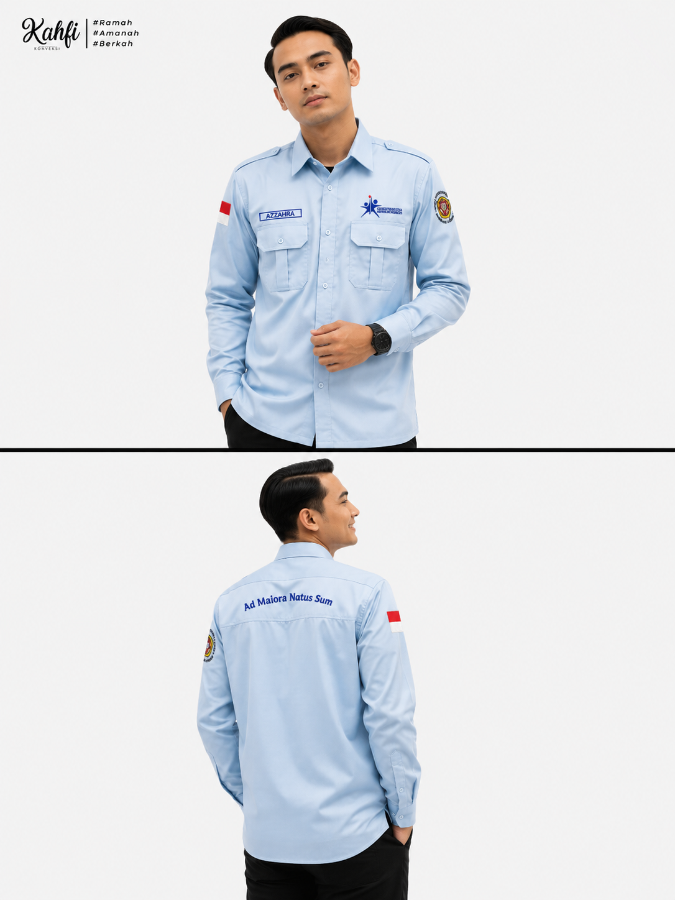

Portfolio Real Production
Galeri Hasil Produksi Kami
Klik pada kategori filter untuk melihat portfolio kami, atau **klik gambar produk** untuk membuka gallery viewer.

Kaos Combed & Polo Shirt
Menggunakan bahan Cotton Combed 30s adem dengan sablon plastisol hd presisi tinggi anti pecah.

Kemeja PDH
Bahan American Drill dan Nagata Drill bermutu tinggi dengan bordir komputer tajam dan kancing tersembunyi.

Kemeja PDL Tactical
Kain Ripstop kokoh tahan sobek, saku velcro serbaguna, dan jaring sistem sirkulasi udara.
Jaket
Bahan Taslan JN anti angin dengan inner furing cotton adem, zipper YKK anti macet.

Jas Almamater Kampus
Bahan High Twist premium dengan finishing semi-jas resmi, full furing, dan busa bahu.

Jersey Printing Custom
Bahan Dryfit / Milano adem menyerap keringat dengan teknik Full Print Sublimasi warna tajam & tidak luntur.